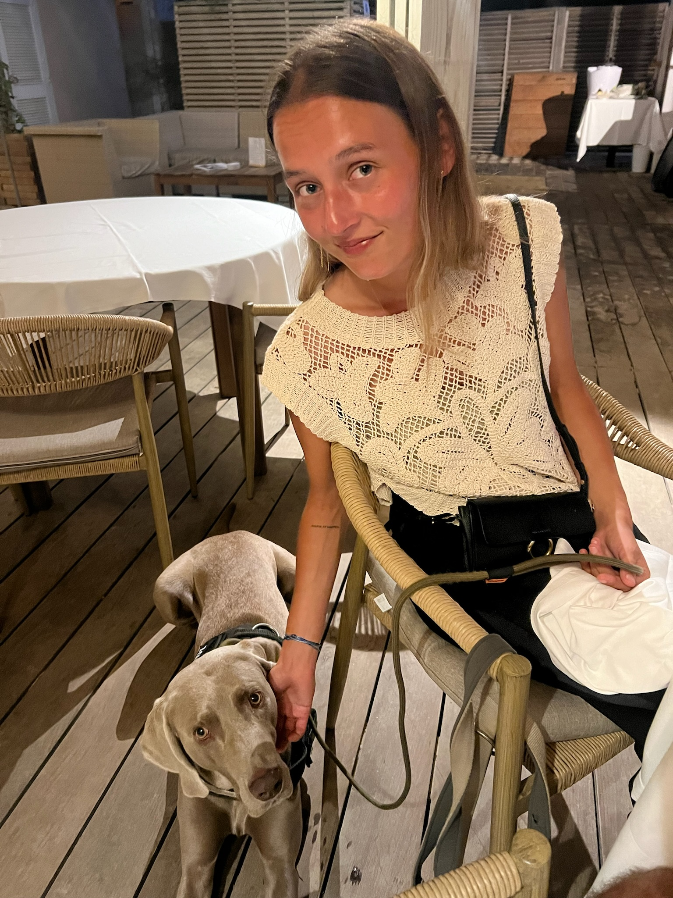

Morgane Tacconi

Summary
I’m an aspiring Full-Stack Developer with a background in international management.
Although I’m still learning and building my skills, I’m committed to becoming a Full-Stack Developer.
Having lived and worked in several countries, I’ve developed a strong ability to adapt, learn new languages, and navigate different cultures.
This experience has shaped my approach to problem-solving and growth.
I’m excited to continue learning web development and to take on projects that allow me to combine creativity and technical problem-solving.
My goal is to become a skilled Full-Stack Developer and contribute to impactful digital solutions.
Education
IAE de Lille – Bachelor’s in Management and International Business (MGI)
[2020 - 2023]
- Completed the first two years of the program, with the first year in Tenerife and the second year in France.
- Participated in an Erasmus exchange in Portugal during my final year.
- Gained valuable international experience and business insights before shifting my focus to entrepreneurship and web development.
Udemy Online Course: Become a Full-Stack Web Developer with just ONE course
[2024 - Present]
- Currently building expertise in HTML, CSS, JavaScript, Node.js, React, PostgreSQL, Web3, and DApps.
Work Experience
Co-Founder – The Corten Club
[September 2022 - September 2024]
- Co-created a lifestyle business with a focus on design and sustainability.
- Managed operations, contributed to product development, and collaborated on marketing strategies.
- Gained valuable entrepreneurial skills in business management, project coordination, and team collaboration.
- Exited the business in 2024 to fully dedicate my time to web development.
Sales Associate – YOURIDE Surfshop
[September 2022 - January 2023
- Worked as a sales assistant in a shop specializing in kitesurf, wakeboard, and snowboard equipment.
- Developed strong customer service and sales skills by assisting clients with product selection and maintaining inventory.
- Managed day-to-day store operations, contributing to the organization and smooth running of the store.
Kite Instructor
[2020 - Present]
- Taught kiteboarding to students of varying skill levels, focusing on safety, technique, and confidence-building.
- Enhanced communication skills and learned to adapt to different teaching styles for effective instruction.
Skills
Languages
- French : ⭐⭐⭐⭐⭐
- English : ⭐⭐⭐⭐
- Spanish ⭐⭐⭐⭐
- Portugues : ⭐⭐⭐
Other Skills
- Entrepreneurship: Project management, business development, and product strategy from co-founding The Corten Club.
- Customer Service: Sales and customer relations developed at YOURIDE, ensuring client satisfaction and effective communication.
- Adaptability: Experience living and working in different countries, quickly learning new languages and cultures.
- Teamwork: Collaboration across teams in multiple work and project settings.
Contact Me
My Hobbies